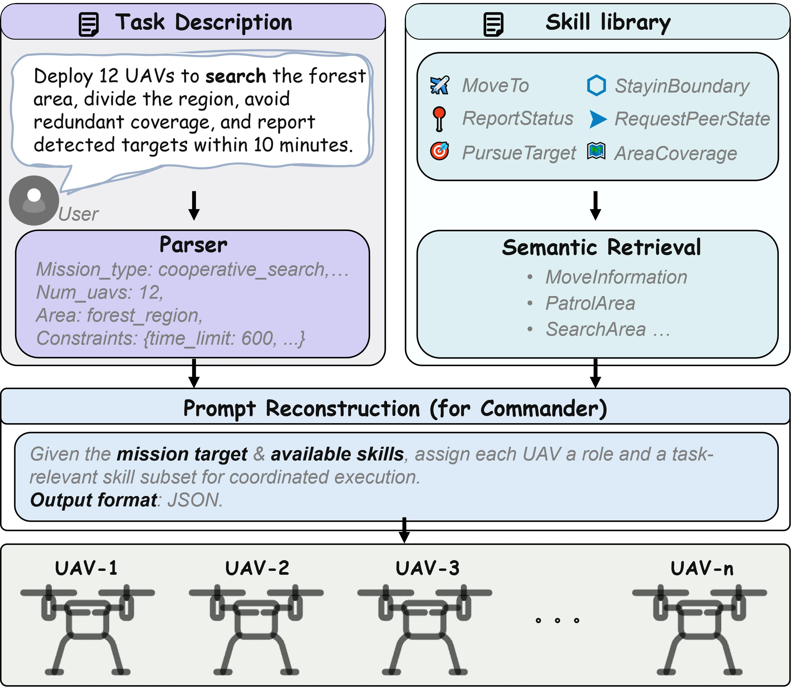

Task-conditioned skill activation
Mission parsing and skill retrieval turn an instruction into a compact execution context. The Commander assigns roles and activates agent-specific skill subsets from a governed catalog.


View full figure ↗